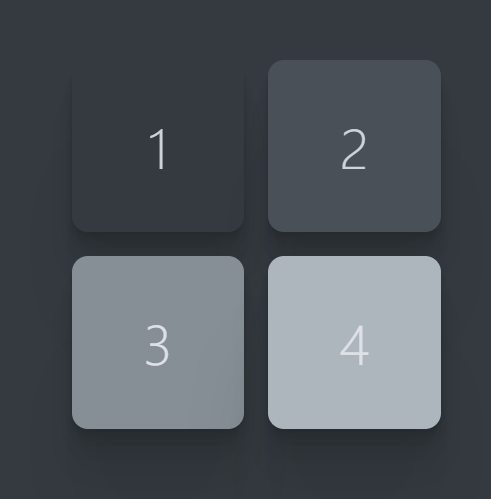
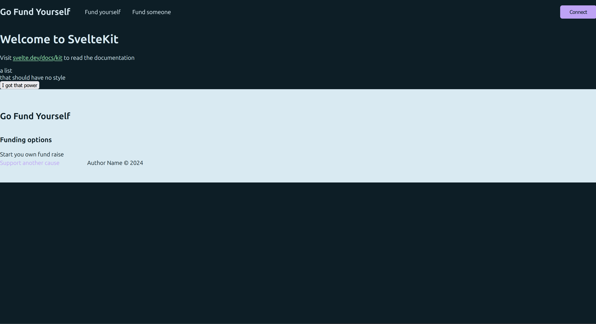
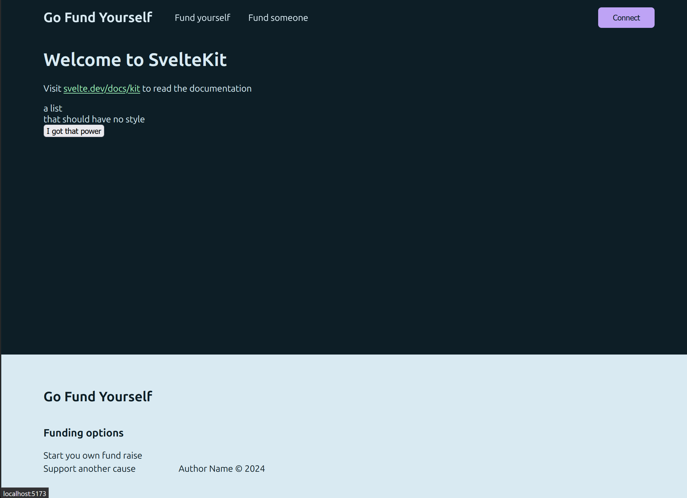

The code for the first stage of development explored in this article can be found here. Please use this to provide additional context in the event that any parts of this article are unclear. Additionally, if aspects of this article are unclear or do not follow best practices please let me know on 𝕏.
Project Setup
SvelteKit Initialisation
As aforementioned in the previous article, I am using SvelteKit to build out my frontend. It is important to note that while Svelte recently announced the release of the latest version Svelte 5, I made this project before that and everything you see was done using Svelte 4. Just giving you all the heads up that there will be no runes here. Luckily Svelte 4 is backwards compatible with Svelte 5, so you can use the latest version and reap all the new performance rewards without any consequences.
Step 1 of course is to create the project, which is easy enough using the CLI:
npx sv create go-fund-yourself-fe
cd go-fund-yourself-fe
npm install
npm run devPlease note that I am currently in the root directory of my previously created fundme_foundry project.
When prompted for initial setup options, I chose:
- Minimal template
- no type checking
- eslint & prettier
- npm
SCSS
Alrighty, so personally I am a sass preprocessor type of guy, as I prefer to use SCSS to style components. A preprocessor extends the capabilities of vanilla CSS and adds features such as variables, nesting, mixins and functions.
If the above appeals to you, simply navigate to your
svelte.config.js file and make the following changes
to your imports and config:
import adapter from '@sveltejs/adapter-auto';
import { vitePreprocess } from '@sveltejs/vite-plugin-svelte';
/** @type {import('@sveltejs/kit').Config} */
const config = {
kit: {
adapter: adapter()
},
preprocess: [vitePreprocess()]
};
export default config;
Additionally, in the vite.config.js file, the
following changes are required with
newer versions of sass:
import { sveltekit } from '@sveltejs/kit/vite';
import { defineConfig } from 'vite';
export default defineConfig({
plugins: [sveltekit()],
css: {
preprocessorOptions: {
scss: {
api: 'modern-compiler'
}
}
}
});Design Philosophy
Go Fund Yourself needs a homepage.
This sounds simple enough, but while creating Go Fund Yourself I discovered I have very little in the way of design skills. I usually rely on professional designers to create great-looking frontends in Figma and do my best to bring their vision to life. Without this crutch, designing a website was initially quite an intimidating proposition.
A few questions sprang to mind when attempting to develop a design. What colours should be used? What fonts should be chosen? Should animations be incorporated to make it feel more alive and modern? How can Go Fund Yourself create a good first impression with new users?
Let's tackle these questions one at a time.
Colour Scheme
I stumbled onto a great YouTuber by the name of
Sajid. He has great practical design advice oriented towards devs. His
video on
random design tips
starts with a guide on selecting colour palettes for a website and
he even provides a site to pick the 4 distinct
HSL values for you
here.
These are the colour values I selected for Go Fund Yourself:
// Light mode colours
$PRIMARY_LIGHT: hsl(220, 50%, 90%);
$SECONDARY_LIGHT: hsl(220, 50%, 10%);
$TERTIARY_LIGHT: hsl(280, 80%, 20%);
$ACCENT_LIGHT: hsl(160, 80%, 20%);
// Dark mode colours
$PRIMARY_DARK: hsl(220, 50%, 10%);
$SECONDARY_DARK: hsl(220, 50%, 90%);
$TERTIARY_DARK: hsl(280, 80%, 80%);
$ACCENT_DARK: hsl(160, 80%, 80%);Surfaces
Exploring style libraries to gain a better idea of how to bring a professional-looking website alive, I encountered Open Props. Open Props uses the idea of surfaces:

This allows content to be layered in a manner that visually informs the user of related content groupings. Each of the surfaces seen in the image above also has a box shadow to give it a more tactile feel and make the layering more apparent. Therefore shadow colour values must also be incorporated into the design.
I opted to adapt this surface concept into the CSS of the app rather than installing Open Props itself. I do not want to stand on the shoulders of giants with this project, I want to create everything from scratch and that means rawdogging the CSS in this case.
// Light mode colours
$LIGHT-SURFACE-1: hsl(220, 50%, 90%);
$LIGHT-SURFACE-2: hsl(220, 50%, 95%);
$LIGHT-SURFACE-3: hsl(220, 50%, 100%);
$LIGHT-SHADOW-1: hsla(220, 50%, 10%, 0.3);
$LIGHT-SHADOW-2: hsla(220, 50%, 10%, 0.15);
$SECONDARY-LIGHT: hsl(220, 50%, 10%);
$TERTIARY-LIGHT: hsl(280, 80%, 20%);
$ACCENT-LIGHT: hsl(160, 80%, 20%);
// Dark mode colours
$DARK-SURFACE-1: hsl(220, 50%, 10%);
$DARK-SURFACE-2: hsl(220, 50%, 15%);
$DARK-SURFACE-3: hsl(220, 50%, 20%);
$DARK-SHADOW-1: hsla(220, 50%, 90%, 0.3);
$DARK-SHADOW-2: hsla(220, 50%, 90%, 0.15);
$SECONDARY-DARK: hsl(220, 50%, 90%);
$TERTIARY-DARK: hsl(280, 80%, 80%);
$ACCENT-DARK: hsl(160, 80%, 80%);Fonts
Previously, I used Google Fonts for all my font needs. To no one's surprise, Google fonts is a font server provided by Google, with a plethora of fonts that can be added to your CSS.
However, recently I was made aware of
Fontsource. Fontsource allows you to self-host fonts in your project, this
provides a boost to performance as your app no longer needs to
communicate with the Google font server and increases privacy
compliance by also removing this interaction. I chose the
Ubuntu sans-serif font for Go Fund Yourself.
You can add these fonts via the CLI:
npm install @fontsource-variable/ubuntu-sansMain Style Sheet
Okay, now that we've made some key design decisions it's time to
put them into action. We will start by creating a
main.scss file within a new directory in the
lib directory called styles.
If you are not using a preprocessor you should just create a
.css file and adapt the content appropriately.
// src/lib/styles/main.scss
@use '@fontsource-variable/ubuntu-sans';
// Light mode colours
$LIGHT-SURFACE-1: hsl(220, 50%, 90%);
$LIGHT-SURFACE-2: hsl(220, 50%, 95%);
$LIGHT-SURFACE-3: hsl(220, 50%, 100%);
$LIGHT-SHADOW-1: hsla(220, 50%, 10%, 0.3);
$LIGHT-SHADOW-2: hsla(220, 50%, 10%, 0.15);
$SECONDARY-LIGHT: hsl(220, 50%, 10%);
$TERTIARY-LIGHT: hsl(280, 80%, 20%);
$ACCENT-LIGHT: hsl(160, 80%, 20%);
$DISABLED-LIGHT: hsl(220, 50%, 35%);
// Dark mode colours
$DARK-SURFACE-1: hsl(220, 50%, 10%);
$DARK-SURFACE-2: hsl(220, 50%, 15%);
$DARK-SURFACE-3: hsl(220, 50%, 20%);
$DARK-SHADOW-1: hsla(220, 50%, 90%, 0.3);
$DARK-SHADOW-2: hsla(220, 50%, 90%, 0.15);
$SECONDARY_DARK: hsl(220, 50%, 90%);
$TERTIARY-DARK: hsl(280, 80%, 80%);
$ACCENT-DARK: hsl(160, 80%, 80%);
$DISABLED-DARK: hsl(220, 50%, 75%);
:root {
--surface-1: #{$LIGHT-SURFACE-1};
--surface-2: #{$LIGHT-SURFACE-2};
--surface-3: #{$LIGHT-SURFACE-3};
--shadow-1: #{$LIGHT-SHADOW-1};
--shadow-2: #{$LIGHT-SHADOW-2};
--secondary: #{$SECONDARY-LIGHT};
--tertiary: #{$TERTIARY-LIGHT};
--accent: #{$ACCENT-LIGHT};
--disabled: #{$DISABLED-LIGHT};
}
@media (prefers-color-scheme: dark) {
:root {
--surface-1: #{$DARK-SURFACE-1};
--surface-2: #{$DARK-SURFACE-2};
--surface-3: #{$DARK-SURFACE-3};
--shadow-1: #{$DARK-SHADOW-1};
--shadow-2: #{$DARK-SHADOW-2};
--secondary: #{$SECONDARY-DARK};
--tertiary: #{$TERTIARY-DARK};
--accent: #{$ACCENT-DARK};
--disabled: #{$DISABLED-DARK};
}
}
body {
background-color: var(--surface-1);
color: var(--secondary);
font-family: 'Ubuntu Sans Variable', sans-serif;
}
html,
body {
height: 100%;
margin: 0;
}
ul,
ol {
list-style: none;
margin: 0;
padding: 0;
}
a {
color: var(--accent);
}
Firstly, the font installed using fontsource was
imported with the use keyword. Next, all the colours
were declared as SCSS variables and a new colour was included for
disabled buttons and fields for both the light and dark themes. The
next two sections provide the scaffolding for theming changes to be
toggled in the future. Presently, the default colour palette is set
to light mode, however, when the user has dark mode enabled on
their browser the dark theme colour palette overrides these values.
Therefore by default, the theme of the website will be the same as
the theme used by the browser. The CSS variables declared in the
:root will be available to all our components as they
are made available globally through inheritance.
Then the background colour, font colour and font style are all set
in the body. Note fontsource will provide
instructions for the font you have installed, as my font was serif,
sans-serif is required in its declaration.
Finally, the height of the html and
body elements are set to 100% to ensure
the app takes the full height of the screen. Additionally, list
styling and padding are removed by default for all
ol and ul elements. This is for
convenience, the nav bar and the footer components will use these
lists and we would have to remove the default styling in each
component, so it saves time removing globally. Also the colour
of hyperlinks is changed to better fit the theme we have selected.
SvelteKit Route Files
It is time to create the landing page. This page will go in the
routes directory, currently, there is one SvelteKit
route file +page.svelte in this directory. Route files
are marked with a + prefix in the file name. As
SvelteKit uses filesystem-based routing, this
+page.svelte file is the page that will load at the
root URL http://localhost:5173/.
SvelteKit also offers a +layout.svelte file, which
enables you to build a template to contain recurring elements
that remain present between different pages such as a navbar or
footer. Any good homepage will have a nav and a footer so let's
build out the +layout.svelte file.
// src/routes/+layout.svelte
<script>
import '$lib/styles/main.scss';
</script>
<main>
<slot />
</main>
The +layout file also acts as an entry point for the
main.scss file. Upon saving this you should notice the
styles we added come to life. Additionally, a
main tag was added to wrap the slot. This
is for
SEO
purposes. slot is the tag that tells the Svelte
compiler where the contents of the +page.svelte should
be inserted within the structure of the
+layout.svelte file.
Building the Landing Page
Nav bar
Now that the structure has been set it is time to start
constructing the various pieces that the landing page is composed
of, starting with the navbar. Navbars are on every page and look
simple enough, but are always more time-consuming than you think in
my experience. In any case, in the routes directory, a
Navbar.svelte file can be added.
// src/routes/Navbar.svelte
<nav>
<h2><a href="/">Go Fund Yourself</a></h2>
<ul>
<li><a href="/fund-yourself">Fund yourself</a></li>
<li><a href="/fund-someone">Fund someone</a></li>
<button>connect</button>
</ul>
</nav>
Okay, it is important to note that SvelteKit has no specialised
link component to change the route, it is all done via
the a tag. Therefore, clicking the logo will take you
to the home page or root URL /. Conversely, clicking
the two list items will take you to different pages, where you can
create and donate to different fund-raises respectively. Clicking
on these two links will result in a 404 error, but these pages will
be built later to fix this error. You can ignore it for now.
The navbar can now be added to the +layout.svelte file
so that it is rendered to the main page.
// src/routes/+layout.svelte
<script>
import '$lib/styles/main.scss';
import Navbar from './Navbar.svelte';
</script>
<Navbar />
<main>
<slot />
</main>I think you'll agree that in its present state, the navbar looks somewhere between plain and hideous, so let's add some CSS to change that.
// src/routes/Navbar.svelte
<nav>
<h2><a id="nav-logo" href="/">Go Fund Yourself</a></h2>
<ul id="links-container">
<li><a href="/fund-yourself">Fund yourself</a></li>
<li><a href="/fund-someone">Fund someone</a></li>
<button>Connect</button>
</ul>
</nav>
<style scoped lang="scss">
nav {
align-items: center;
display: flex;
flex-direction: row;
gap: 2.5rem;
margin-inline: auto;
position: sticky;
top: 0;
width: 100%;
z-index: 1;
#nav-logo {
display: block;
position: relative;
width: max-content;
}
ul {
align-items: center;
display: flex;
gap: 2rem;
position: relative;
width: 100%;
}
button {
background-color: var(--tertiary);
border-radius: 6px;
border: none;
color: var(--surface-1);
cursor: pointer;
font-weight: 550;
margin-left: auto;
padding: 10px 12px;
width: 100px;
}
}
</style>Further changes will be added to the navbar, but this will do for now.
Footer
Footers are quite simple, as done with the navbar before it, a
Footer.svelte file was created in the
routes directory.
// src/routes/Footer.svelte
<footer id="site-footer">
<section id="top-row">
<h2 class="h3">Go Fund Yourself</h2>
</section>
<section id="bottom-row">
<div id="funding-option">
<h3 class="h6">Funding options</h3>
<ul>
<li><a href="/fund-yourself">Start your own fund raise</a></li>
<li><a href="/fund-someone">Support another cause</a></li>
</ul>
</div>
<div id="about-creator">
<ul>
<li>Go Fund Yourself © {new Date().getFullYear()}</li>
</ul>
</div>
</section>
</footer>
<style scoped lang="scss">
#site-footer {
color: var(--surface-1);
display: flex;
flex-direction: column;
padding-top: 2.5rem;
padding-bottom: 2.5rem;
position: relative;
#bottom-row {
display: flex;
flex-direction: row;
gap: 4rem;
#about-creator {
align-content: end;
p {
margin-bottom: 4px;
}
}
}
li {
margin-bottom: 0.25rem;
}
a {
color: var(--surface-1);
text-decoration: none;
&:hover {
color: var(--tertiary);
}
}
&::before {
content: '';
background-color: var(--secondary);
height: 100%;
left: 50%;
position: absolute;
top: 0;
transform: translateX(-50%);
width: 100vw;
z-index: -1;
}
}
</style>
Perfect, this can now be imported into the
+layout.svelte file to complete the basic scaffolding
of our landing page. However, there is a noticeable issue:

The +layout.svelte file can be modified to ensure that
both the navbar and the footer are placed in their correct position
at the top and bottom of the page respectively.
// src/routes/+layout.svelte
<script>
import '$lib/styles/main.scss';
import Navbar from './Navbar.svelte';
import Footer from './Footer.svelte';
</script>
<div class="container">
<Navbar />
<main>
<slot />
</main>
<Footer />
</div>
<style scoped lang="scss">
.container {
display: grid;
grid-template-rows: auto 1fr auto;
height: 100%;
margin-inline: auto;
max-inline-size: 1080px;
padding-inline: 2rem;
}
</style>Much better:

Landing Page Content
When I was creating this project I was learning vim motions on vimified. Not only did it help me learn the shortcuts for vim, but it was also the inspiration for a simple yet effective landing page design.
// src/routes/+page.svelte
<div id="landing-container">
<section id="landing-section">
<h1>Go</h1>
<h1>Fund</h1>
<h1>Yourself.</h1>
<div id="call-to-action">
<button class="shadow-btn">Raise funds</button>
<p>Harness the power of crowd-sourced fundraising today</p>
</div>
</section>
</div>
<style scoped lang="scss">
#landing-section {
align-items: center;
display: flex;
flex-direction: column;
justify-content: center;
margin-top: 60px;
padding: 2.5rem;
position: relative;
h1 {
font-size: 108px;
margin: 0;
}
#call-to-action {
align-items: center;
display: flex;
flex-direction: column;
gap: 1rem;
justify-content: center;
margin-top: 2.5rem;
padding-top: 2.5rem;
}
}
</style>You may have noticed that the class applied to the button is not present in the style of the component. Buttons are a key part of your application; they are dynamic elements and the element users interact with to action their requests. As such I have numerous different styles of buttons to convey the importance of the button and give it life.
// src/lib/styles/_buttons.scss
.connect-btn {
background-color: var(--tertiary);
border-radius: 6px;
border: none;
color: var(--surface-1);
cursor: pointer;
font-weight: 550;
padding: 10px 12px;
width: 100px;
&:hover {
background-color: var(--tertiary);
transition: background-color 0.2s;
}
}
.connected-btn {
align-items: center;
background-color: transparent;
border-radius: 6px;
border: none;
color: var(--secondary);
cursor: pointer;
display: flex;
font-weight: 550;
gap: 1rem;
justify-content: center;
padding: 0.75rem;
width: min-content;
img,
svg {
max-height: 20px;
max-width: 20px;
}
@media (max-width: 680px) {
padding: 0.25rem;
}
}
.shadow-btn {
background-color: var(--tertiary);
border-radius: 8px;
border: none;
color: var(--surface-1);
cursor: pointer;
font-weight: 550;
min-width: 100px;
padding: 12px;
&:hover {
box-shadow: 0px 0px 16px var(--tertiary);
}
}
.power-btn {
align-items: center;
background-color: var(--surface-2);
border: 1px solid var(--accent);
border-radius: 12px;
box-shadow: 0 2px var(--accent);
color: var(--secondary);
cursor: pointer;
display: flex;
gap: 0.5rem;
padding: 12px 20px;
&:hover {
box-shadow: 0 4px var(--accent);
}
&:disabled {
border: 1px solid var(--tertiary);
box-shadow: 0 2px var(--tertiary);
}
img,
svg {
max-height: 16px;
max-width: 16px;
}
}
.table-filter-btn {
background-color: transparent;
border: none;
color: var(--secondary);
cursor: pointer;
font-size: 14px;
&:hover {
border-bottom: 2px solid var(--tertiary);
margin-bottom: -2px;
}
}
.pagination-btn {
align-items: center;
background-color: transparent;
border: 1px solid transparent;
color: var(--secondary);
display: flex;
font-size: 14px;
gap: 0.5rem;
padding: 12px;
&:hover:not(:disabled) {
border-radius: 8px;
border: 1px solid var(--secondary);
cursor: pointer;
}
&:disabled {
color: var(--disabled);
}
img,
svg {
max-height: 1rem;
max-width: 1rem;
}
}
.back-btn {
align-items: center;
background-color: transparent;
color: var(--secondary);
display: flex;
font-size: 14px;
gap: 0.25rem;
padding: 12px;
text-decoration: none;
&:hover:not(:disabled) {
text-decoration: underline;
border-radius: 8px;
cursor: pointer;
}
img,
svg {
max-height: 0.65rem;
max-width: 0.65rem;
}
}
.cancel-btn {
background-color: transparent;
border: 1px solid var(--secondary);
border-radius: 8px;
color: var(--secondary);
cursor: pointer;
padding: 0.75rem;
&:hover {
background-color: var(--surface-1);
}
}
.max-btn {
background-color: transparent;
border: none;
cursor: pointer;
padding: 0.5rem;
&:hover {
text-decoration: underline;
}
}
Importing these buttons into the main.scss will enable
these classes to be used throughout the app.
// src/lib/styles/main.scss
@use 'buttons';
...Animations… erm I mean transitions
Svelte has a fantastic offering of
transitions
to add life to different elements as they are added and removed to
the DOM. A fade transition to the newly added
+page.svelte content gives it more life and makes the
user's entrance to the site feel more grandiose.
// src/routes/+page.svelte
<script>
import { onMount } from 'svelte';
import { fade } from 'svelte/transition';
// STATE VARS
let landingPageVisible = false;
// LIFECYCLE LOGIC
onMount(() => {
landingPageVisible = true;
window.scrollTo(0, 0);
});
</script>
<div id="landing-container">
<section id="landing-section">
{#if landingPageVisible}
<h1 in:fade={{ delay: 100, duration: 1000 }}>Go</h1>
<h1 in:fade={{ delay: 800, duration: 1000 }}>Fund</h1>
<h1 in:fade={{ delay: 1500, duration: 1000 }}>Yourself.</h1>
<button
in:fade={{ delay: 2200, duration: 1000 }}
class="shadow-btn"
>Raise funds</button>
<p>Harness the power of crowd-sourced fundraising today</p>
{/if}
</section>
</div>
fade comes from the
svelte/transitions module, but it is possible to
build
custom transitions, that uses JavaScript or CSS to provide the animation behaviour.
This article
here
explains custom transitions in depth.
The API for a custom transition is detailed below:
transition = (node: HTMLElement, params: any, options: { direction: 'in' | 'out' | 'both' }) => {
delay?: number,
duration?: number,
easing?: (t: number) => number,
css?: (t: number, u: number) => string,
tick?: (t: number, u: number) => void
}A transition is a function that has the following properties
-
Takes a parameter
node, which is an HTML element to which the transition will be applied. -
Can optionally provide options for each stage of the
transition,
inwhen the element is being rendered,outwhen the component is being removed orbothwhich encapsulates the previous two stages. -
Optionally returns a
delay, time in ms before transition runs. -
Optionally returns a
duration, the time in ms the transition will take to complete. -
Optionally returns
easing, the rate of change of the transition within the duration it runs. E.g. does the animation take linear time to complete or speed up or slow down throughout the duration it runs. -
Must return either a
cssortickcallback that is the transition that will be applied to the element.
Here is an example of a custom transition used in Go Fund Yourself:
// src/lib/animationsAndTransitions/typewriter.js
export default function typewriter(node, { delay = 0, speed = 2 }) {
const valid = node.childNodes.length === 1 && node.childNodes[0].nodeType === Node.TEXT_NODE;
if (!valid) {
throw new Error(`This transition only works on elements with a single text node child`);
}
const text = node.textContent;
const duration = text.length / (speed * 0.01);
return {
delay,
duration,
tick: (t) => {
const i = Math.trunc(text.length * t);
node.textContent = text.slice(0, i);
}
};
}The transition above does the following:
- It checks that the HTML element only contains text to which the typewriter effect will be applied and throws an error if this is not fulfilled.
-
Stores the pure text in the var
text -
Calculates duration based on the text length, the
speedparameter which is defaulted to 2. -
Defines a JavaScript function for the effect. The
tvalue increases from 0 to 1 over the duration of the transition, as this value increases, more characters are added to the string slice, giving the effect that the characters are being typed out.
This can now be added to the call to action text below the button
on the landing page on +page.svelte in the
routes directory:
// src/routes/+page.svelte
...
<div id="landing-container">
<section id="landing-section">
{#if landingPageVisible}
<h1 in:fade={{ delay: 100, duration: 1000 }}>Go</h1>
<h1 in:fade={{ delay: 800, duration: 1000 }}>Fund</h1>
<h1 in:fade={{ delay: 1500, duration: 1000 }}>Yourself.</h1>
<button in:fade={{ delay: 2200, duration: 1000 }} class="shadow-btn">Raise funds</button>
<p in:typewriter={{ speed: 2, delay: 2250 }}>
Harness the power of crowd-sourced fundraising today
</p>
{/if}
</section>
</div>
...Finishing the Homepage
Promotional content
Now that there is a compelling and professional landing area for the user when they first visit the site, it is time to complete the rest of the landing page. To complete this page, additional promotional content with call-to-action buttons was added. This will provide an explanation of the core offerings of the platform with immediate access points to these offerings. With the additional material added, the landing page code now looks as follows:
<script>
import { onMount } from 'svelte';
import { fade } from 'svelte/transition';
import { typewriter } from '$lib';
import { AidSVG, AnonymousSVG, ChainsSVG, GlobeSVG } from '$lib/assets';
// STATE VARS
let landingPageVisible = false;
// LIFECYCLE LOGIC
onMount(() => {
landingPageVisible = true;
window.scrollTo(0, 0);
});
</script>
<div id="landing-container">
<section id="landing-section">
{#if landingPageVisible}
<h1 in:fade={{ delay: 100, duration: 1000 }}>Go</h1>
<h1 in:fade={{ delay: 800, duration: 1000 }}>Fund</h1>
<h1 in:fade={{ delay: 1500, duration: 1000 }}>Yourself.</h1>
<button in:fade={{ delay: 2200, duration: 1000 }} class="shadow-btn">Raise funds</button>
<p in:typewriter={{ delay: 2200 }}>Harness the power of crowd-sourced fundraising today</p>
{/if}
</section>
<section class="promo-section">
<div class="promo-container" transition:fade>
<div class="promo-card card">
<h2>Raise funds for a special cause</h2>
<p>
This platform allows you to leverage the power of smart contracts on the blockchain to raise funds for any type of cause near and dear to your heart in a decentralised and permissionless manner.
</p>
<p>
This means that Go Fund Yourself facilitates fundraising that is censorship resistant and global in its outreach. No one can take down your fundraising initiative and anyone with an internet connection can contribute to your cause.
</p>
<p>Get started raising today.</p>
<button
class="shadow-btn"
on:click={() => goto('/fund-yourself')}
>Fund yourself</button>
</div>
<div class="promo-icon-container">
<div class="promo-icon-card card">
<GlobeSVG />
<p>Raise globally</p>
</div>
<div class="promo-icon-card card">
<ChainsSVG />
<p>Raise without censorship</p>
</div>
</div>
</div>
</section>
<section class="promo-section">
<div class="promo-container">
<div class="promo-card card">
<h2>Donate to initiatives around the world</h2>
<p>
Donate to unique initiatives around the globe and aid different communities and people to help them achieve their goals.
</p>
<p>
Being built on top of blockchain technology donations are pseudo-anonymous by default. So you can donate to different causes with peace of mind that your identity is not broadcast every time you make a donation.
</p>
<p>Get started donating today.</p>
<button
class="shadow-btn"
on:click={() => goto('/fund-someone')}
>Fund someone</button>
</div>
<div class="promo-icon-container">
<div class="promo-icon-card card">
<AidSVG />
<p>Aid communities across the world</p>
</div>
<div class="promo-icon-card card">
<AnonymousSVG />
<p>Pseudo-anonymous donations by default</p>
</div>
</div>
</div>
</section>
</div>
<style scoped lang="scss">
#landing-section {
align-items: center;
display: flex;
flex-direction: column;
height: 80vh;
justify-content: center;
margin-top: 60px;
padding: 2.5rem;
position: relative;
h1 {
font-size: 108px;
margin: 0;
}
button {
margin-top: 5rem;
}
p {
margin-bottom: 0;
margin-top: 1rem;
}
}
.promo-section {
min-height: max-content;
padding-block: 5rem;
position: relative;
}
.card {
background-color: var(--surface-2);
border-radius: 20px;
border-top: 4px solid var(--accent);
box-shadow:
0 2px 2px var(--shadow-1),
0 4px 4px var(--shadow-2);
padding: 2rem;
}
.promo-container {
display: flex;
gap: 2.5rem;
.promo-card {
flex: 1;
button {
margin: 1rem 0;
}
}
.promo-icon-container {
display: flex;
flex-direction: column;
gap: 1rem;
.promo-icon-card {
align-items: center;
display: flex;
flex-direction: column;
flex: 1;
height: auto;
justify-content: center;
padding: 1rem;
p {
font-weight: 500;
margin-bottom: 0;
max-width: 155px;
text-align: center;
}
img {
border-radius: 50%;
max-height: 100px;
max-width: 100px;
}
}
}
}
</style>Please refer to this link for the code for SVG components that were added.
Okay, the content for the homepage is finished. However, just as was done for the landing section, animations can be added to the new content. To keep the UI decluttered and draw the user's attention to the latest information, fade animations on scroll can be applied to the new content cards to fade in when visible and fade out when hidden.
Intersection Observer
How does one know when an element has scrolled into/out of view of the user? Fortunately, there is an established API supported by the major browsers that fulfils this purpose, the intersection observer API.
It is quite easy to work with this API, simply put by the MDN docs:
The Intersection Observer API allows you to configure a callback that is called when either of these circumstances occur:
- A target element intersects either the device's viewport or a specified element.
- The first time the observer is initially asked to watch a target element.
With this knowledge, intersection observers can be set up for both
the fundraising and donation promotional sections. A state
variable for each of these sections will be added,
fundRaisingPromoVisible and
donationPromoVisible. These will initially be set to
false and the class promo-section shared
by the promo content will set the opacity to 0,
ensuring the content is hidden initially.
// src/routes/+page.svelte
...
// STATE VARS
let landingPageVisible = false;
let fundRaisingPromoVisible = false;
let donationPromoVisible = false;
...
<style scoped lang="scss">
...
.promo-section {
height: max-content;
opacity: 0;
padding-block: 5rem;
position: relative;
}
...
</style>
These observers will fire a callback function when the element is
40% viewable and will set the viewable state variable to true,
triggering the fade-in animation on scroll. Conversely, when the
element is not 40% viewable the callback should fire again setting
the visible state variable to false.
To create an intersection observer requires calling the observer's constructor passing it the aforementioned callback and some initialisation options that dictate the type of intersection the observer is monitoring.
const observerOptions = {
root: null,
rootMargin: '0px',
threshold: [0, 0.2, 0.4, 0.6, 0.8, 1]
};
These are the options passed to the observer constructor on the
+page.svelte. The root refers to the
element that is being intersected with or that is used to measure
the visibility of the target element. If left
null the root becomes the viewport itself or the
content viewable on the screen by the user.
rootMargin allows a margin around the root element to be
added to expand or contract the viewable area of the target
element. Finally, threshold is the ratio of the
visibility of the target element against the root element. If an
element is half viewable its threshold value is
0.5 if fully viewable 1 and if hidden
0. By providing an array of values for the
threshold, the observer is able to update the
visibility of the target element between the ticks of the provided
threshold. In this case increments of 20%. For a practical
demonstration of thresholds please refer to the
MDN playground example
in this article.
To instantiate an intersection observer is quite simple:
const observer = new IntersectionObserver(callback, options);
The options are ready, time to create the callback functions. Now
as aforementioned, the goal of these callback functions is to set
the visibility state variables of the content to
true when 40% visible and false when less than 40%
visible. This looks as follows:
// src/routes/+page.svelte
...
const showFundRaisingPromo = (entries) => {
const [entry] = entries;
if(entry.intersectionRatio >= 0.4) {
fundRaisingPromoVisible = true;
} else {
fundRaisingPromoVisible = false;
}
}
const renderDonationPromo = (entries) => {
const [entry] = entries;
if (entry.intersectionRatio >= 0.4) {
donationPromoVisible = true;
} else {
donationPromoVisible = false;
}
};
Intersection observer callbacks have an argument
entries that contains a multitude of data about the
intersection details of the target element. You can read more
about this
here.
intersectionRatio is the ratio of the target element's
visibility against the root element. For example, if the root
element was the viewport and half the target element was visible,
the intersection ratio would be 0.5.
Now that the callbacks are prepared it is time to create the
intersection observers to monitor the two content sections. These
observers will be created in the onMount portion of
the +page.svelte.
// src/routes/+page.svelte
...
// STATE VARS
let landingPageVisible = false;
let fundRaisingPromoVisible = false;
let donationPromoVisible = false;
let fundRaisingContainer;
let donationContainer;
// LIFECYCLE LOGIC
onMount(() => {
landingPageVisible = true;
window.scrollTo(0, 0);
const observerOptions = {
root: null,
rootMargin: '0px',
threshold: [0, 0.2, 0.4, 0.6, 0.8, 1]
};
const fundRaisingPromoObserver = new IntersectionObserver(
renderFundRaisingPromo,
observerOptions
);
const donationPromoObserver = new IntersectionObserver(
renderDonationPromo,
observerOptions
);
fundRaisingPromoObserver.observe(fundRaisingContainer);
donationPromoObserver.observe(donationContainer);
return () => {
fundRaisingPromoObserver.unobserve(fundRaisingContainer);
donationPromoObserver.unobserve(donationContainer);
fundRaisingPromoObserver.disconnect();
donationPromoObserver.disconnect();
};
});
// UTILITY FUNCTIONS
const renderFundRaisingPromo = (entries) => {
const [entry] = entries;
if (entry.intersectionRatio >= 0.4) {
fundRaisingPromoVisible = true;
console.log('Fund-raising promo is visible');
} else {
fundRaisingPromoVisible = false;
console.log('Fund-raising promo is not visible');
}
};
const renderDonationPromo = (entries) => {
const [entry] = entries;
if (entry.intersectionRatio >= 0.4) {
donationPromoVisible = true;
console.log('Donation promo is visible');
} else {
donationPromoVisible = false;
console.log('Donation promo is not visible');
}
};
In Svelte you can use bind:this on an HTML element to
have a reference to this element in the JavaScript code. That is
what's done for the fundRaisingContainer and
donationContainer variables. The markup for these
elements looks as follows:
// src/routes/+page.svelte
<section bind:this={fundRaisingContainer}>
...
</section>
<section bind:this={donationContainer}>
...
</section>Continuing with the setup of the observers, it can be seen that the observer options are defined and then the observers are created using the callbacks and the observer options as seen below:
const fundRaisingPromoObserver = new IntersectionObserver(
renderFundRaisingPromo,
observerOptions
);
const donationPromoObserver = new IntersectionObserver(
renderDonationPromo,
observerOptions
);Next, the observers need to be assigned a target element to observe:
fundRaisingPromoObserver.observe(fundRaisingContainer);
donationPromoObserver.observe(donationContainer);
Finally, the observers should be cleaned up and removed when
leaving the homepage. The onMount lifecycle hook will
run any function returned from the lifecycle hook. Therefore, the
observer cleanup code can be written here:
return () => {
// Halt observing html elements
fundRaisingPromoObserver.unobserve(fundRaisingContainer);
donationPromoObserver.unobserve(donationContainer);
// Close the intersection observers
fundRaisingPromoObserver.disconnect();
donationPromoObserver.disconnect();
};As can be observed from the console, the observers are functioning correctly. They fire the callbacks and update the state variables when the scroll changes and content visibility is updated. The final step is to create animations for these observers to trigger to complete the homepage.
Animations on scroll
To implement this functionality, CSS keyframes and animations can be used:
// src/lib/animationsAndTransitions/fade.scss
@keyframes fadeIn {
0% {
opacity: 0;
}
100% {
opacity: 1;
}
}
@keyframes fadeOut {
0% {
opacity: 1;
}
100% {
opacity: 0;
}
}
.fade-in {
animation: fadeIn 0.75s ease-in forwards;
}
.fade-out {
animation: fadeOut 0.5s ease-in forwards;
}
This file was added to the previously created
animationsAndTransitions directory. The
@keyframes rule allows animations to be generated by
specifying how the style of an element should change over time.
Here we change opacity from 0 to 1 or vice versa. This
creates the animation of a fade-in/out. Once these changes are
defined, they can be applied using the
animation property. The
fade-in and fade-out classes will apply
the keyframes to HTML elements that possess the class. The
animation property includes several parameters.
Examining the fade-in class:
-
First is the name of the
@keyframesanimation to use.fadeInin this case. - Second is the amount of time to complete one cycle of the animation. This is 0.75s above.
-
Next is
animation-timing-function, which defines the rate of change of the animation. E.g. linear, ease-in, etc.ease-inis used to start the animation slowly and then gradually speed up. -
Finally,
animation-directioncontrols whether the animation plays forward, backward or alternates.forwardwas used above to play the animation from 0% to 100% and retain the final style of the element.
The complete list of parameters can be found here.
Next, we need to import these animations into the
main.scss file using the use keyword to
ensure that these new animation classes are available in all the
Svelte components.
// src/lib/styles/main.scss
@use 'buttons';
@use '@fontsource-variable/ubuntu-sans';
@use '../animationsAndTransitions/fade.scss';
...
Next, these classes can be applied to the new content in
+page.svelte:
// src/routes/+page.svelte
...
<section
bind:this={fundRaisingContainer}
class={`promo-section ${fundRaisingPromoVisible ? 'fade-in' : 'fade-out'}`}
>
...
</section>
<section
class={`promo-section ${donationPromoVisible ? 'fade-in' : 'fade-out'}`}
bind:this={donationContainer}
>
...
</section>And voilà a simple yet modern and interactive landing page.
Please refer to the GitHub repo for the full source code of the completed part 1 code.
Transitions vs CSS animations with keyframes
You may be wondering why CSS animations were used on the content sections as opposed to Svelte transitions, which were used on the landing section. This is a fair point to wonder and I want to explain my rationale behind this choice.
Firstly, recall that Svelte transitions can only be applied to an
element when it is entering or leaving the DOM as a result of a
state change. This is trivial to set up, there are already
visibility state variables for each of the content sections. The
content within the <section> tags could be
wrapped in a conditional template
{#if isVisible} … {/if} and then transitions could be
applied to the content. However, the height of the content sections
(.promo-section) is: max-content. This
presents an issue with the intersection observer. If the content is
not yet rendered because it is not visible, then the section has no
content and its height is zero. This means the observer can never
observe it intersecting with the viewport, as having a height of
zero effectively makes the element invisible. Therefore, the
visibility state variable will never be updated and the content
will never show.
Of course, it is possible to specify a
min-height to be a portion of the
vh as done with the landing section, however, I did not
wish to do that. I wanted the height of the container to
accommodate only the amount of space required. This is why I used
keyframes and animations. The intersection observer could update
state variables which would modify the class applied to the content
creating the same effect. However, this approach ensures there's no
popping or excessive space taken for content on the page, creating
the best user experience.
Wrapping up
I would like to reiterate that all code from this section can be found here. This article explored and discussed a number of topics:
- SvelteKit Project Setup
- The UI Design Philosophy
- SvelteKit Route Files
- Svelte Transitions
- Intersection Observers
- CSS Keyframes and Animations
At the conclusion of this article, a modern homepage has been built and the foundation has been laid to create other components and pages, as well as implementing features such as toggling between light and dark themes.
The next instalment will explore these topics and should be out shortly.
If you found this article helpful please subscribe for notifications about future articles and mint to show you support!
See you in the next one👋